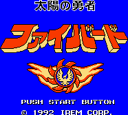

Fighbird - Nintendo Games

- Company: Irem
- Date Released: 1992
- Genre: Shooting game
Controls
- A button: Select Machine
- B button: Shoot
- Start: Pause
- Select: [not used]
You collect various power-ups along the way. There are also two different characters you can
choose. During the game, you can choose different machines to use. Each machine has its
own unique shooting capacity.
Anime Video Game Resource Center © 1998 by Luis A. Cruz